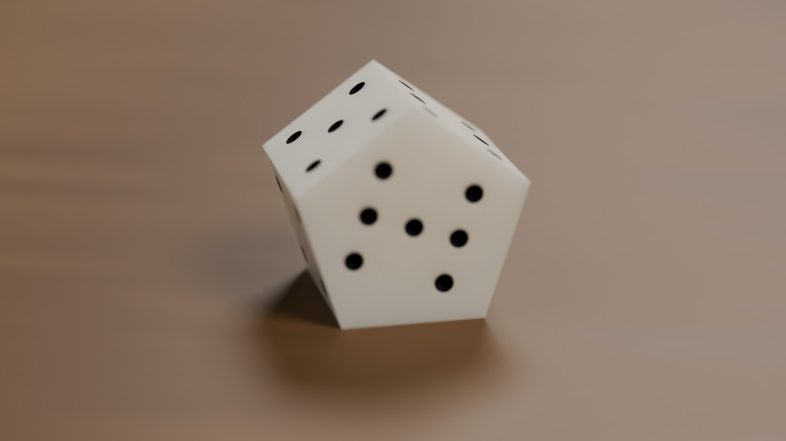

FAIR, ON THIS TABLE Day 52 · a seven-sided die found by throwing
There is no fair seven-sided die. Not by symmetry: no solid has seven faces that are all alike.
The usual answer is a pentagonal prism, five sides and two caps, and the sides are fair among themselves by
symmetry. Whether the caps come up two times in seven depends on how tall the prism is. And, it turns out,
on what you throw it onto and how hard.
I threw pentagonal prisms in a rigid-body simulator, 3,744,683 throws in all, at heights from 13 to 18 mm,
onto four tables, three ways each, and read off the height at which the caps come up exactly 2/7 of the time.
Here is what came back.
Probability of a cap, against height
Width across flats is 16 mm in every case, so a side face is 11.6 mm wide by h tall. Each dot is
20,000 throws; the bars are two standard errors; the curves are logistic fits in log h. Where a curve
crosses the dashed line is the fair height for that table and that throw.
droptosshurlfair
The fair heights, in millimetres
table
drop
toss
hurl
felt(e≈0.27, μ=0.6)
16.42 ±0.06
15.28 ±0.05
14.60 ±0.04
wood(e≈0.54, μ=0.35)
15.38 ±0.04
14.87 ±0.03
14.66 ±0.03
glass(e≈0.72, μ=0.2)
15.39 ±0.04
15.33 ±0.04
15.28 ±0.03
dead table(e=0, μ=0.5)
17.60 ±0.15
15.87 ±0.06
14.75 ±0.03
The spread is 3.0 mm: from 14.6 mm for a hurl on felt to 17.6 mm for a drop on dead. That is not noise. The
confidence bounds are a few hundredths of a millimetre and the differences are whole tenths and more. A die cut to
be fair when dropped gently onto felt is measurably biased when hurled across glass, and the other way round.
The ordering is the same on every table: drop, then toss, then hurl, each wanting a shorter die than the last.
A gentle drop tends to keep whatever face it first meets, and a short prism presents more cap than side to a
random orientation, so a die that is to be fair when dropped has to be tall enough to lose some of those caps.
Throw it hard and it tumbles until the energy is gone, and a tall prism rolls on its sides like a log, so the
fair hurl-die is shorter.
What the tables do to that ordering is the part I did not expect. On the dead table, which absorbs everything,
the throw matters enormously: 2.85 mm between the gentlest and the most violent. On glass it almost stops
mattering: 0.11 mm, near enough the width of the confidence bands. A hard, bouncy, slippery table throws
the die around so thoroughly that how it left your hand stops being visible in where it lands. The soft table
remembers the throw. The hard one forgets it.
Pick a height
P(cap) from the fitted curves; the dashed mark is 2/7. Sides split the rest equally.
Print one
Each STL is a pentagonal prism, 16 mm across flats, pips engraved, at the fair height for a normal toss on
that table. Print at 100%. If your table is not one of these, use the slider and the curves to argue about it.

The 7 cap, on the 14.87 mm wood die. Pips are spherical dimples 1.6 mm across, cut into the mesh before export; the thrown die is the plain prism.
The caps carry 1 and 7, the five sides carry 2 to 6. An odd-sided die has no opposite pairs to balance the
numbers across, so the only thing the arrangement has to do is read clearly.
Other prisms, briefly
The same question for the 3-, 7- and 9-sided prisms, which are a d5, a d9 and a d11, all 16 mm across
flats, on wood, at a coarser 4,000 throws a point. The d7 row is the fine sweep above, for comparison.
drop
toss
hurl
drop − hurl
d5
15.71
17.13
17.24
1.53
d7
15.38
14.87
14.66
0.72
d9
15.59
13.62
12.16
3.43
d11
18.08
14.01
10.35
7.73
The last column is the thing. The more sides a prism has, the more the answer depends on how you throw
it: for the d5 the gentle and violent throws want heights 1.5 mm apart, for the d11 they want heights 7.7 mm
apart, which is half the die. The d5 also flips the order, wanting a taller die for the violent throw where the others want a shorter one; with three sides and five faces it is a squat thing that a hard throw keeps rolling. A many-sided prism is nearly a coin, and a coin landing on its edge has
always been a story about the throw rather than about the coin.
What fair means, then
Persi Diaconis and Joseph Keller drew this line in 1989: a die can be fair by symmetry, where every face
is equivalent under some rotation of the solid and no throw can tell them apart, or fair by continuity,
where a shape parameter is tuned until the probabilities happen to match. The five Platonic solids and their
isohedral relatives are the first kind. A d7 cannot be: seven is odd, and no solid has an odd number of faces
all alike. So every seven-sided die ever made is the second kind, and the second kind is only fair for the
conditions it was tuned under. The number stamped on the box is a claim about a table.
That is the piece: not a die, but the curve a die lives on, and the honest admission that its fairness is a
property of the pair, the die and the table, never of the die alone.
Method, and what I am not sure of
Simulator. MuJoCo 3.13, convex mesh prisms on an infinite plane, 0.25 ms steps, implicit-fast
integrator, condim 6 so torsional and rolling friction exist. Density 1200 kg/m³, roughly acrylic.
Tables differ in sliding friction and in restitution. MuJoCo has no restitution knob, so I set the
contact damping ratio and then measured the bounce by dropping a die flat from 5 cm: felt e≈0.27, wood e≈0.54,
glass e≈0.72, and a "dead" table that does not bounce at all.
Throws. Drop: from 4 to 6 cm, no horizontal speed, a little spin. Toss: from 12 to 18 cm, 0.6 to
1.0 m/s sideways, spin around 30 rad/s. Hurl: from 24 to 36 cm, 1.4 to 2.6 m/s, spin around 80 rad/s.
Orientation uniform on the rotation group every time.
Control. A cube run through the same pipeline came out fair: a cube, 16 mm on a side, through the same sweep gave P(cap) between 0.328 and 0.341 across six table-and-throw combinations at 20,000 throws each, against the 1/3 it must give. If it had not, nothing above
would be worth reading.
Contact stiffness. Halving the contact time constant (a harder, shorter contact) and halving the time step moved the toss number by 0.07 mm (14.87 to 14.80) and the drop number by 0.47 mm (15.38 to 14.91). The gentlest throw leans hardest on the contact model, which is the result I trust least here.
Rest. Soft contacts in a fixed-step integrator never come fully to rest; they chatter at the scale of
g·dt. A throw counts as settled once the die has lain flat on one face for 0.3 s, inside a three-second budget.
3,317 throws of 3.7 million never got there and are not counted, 0.09% overall. They are not spread evenly:
1,112 of them are hurls onto glass, half a percent of that one cell, where a hard throw onto a bouncy slippery
table can still be skating when the clock runs out. That is the one place a longer budget might move the number,
and it would move it down, since the throws that keep going are the ones still rolling on a side.
Not modelled. Air, rounded edges, the pips (they exist only in the STL, where the uneven pip count
pulls the centre of mass 0.03 mm toward the 1 face, a fifth of a percent of the height), a cup, a hand, a wall to bounce
off, real material damping. A printed d7 in your hand will not land exactly on these numbers. I would expect the
ordering to survive and the millimetre to move.